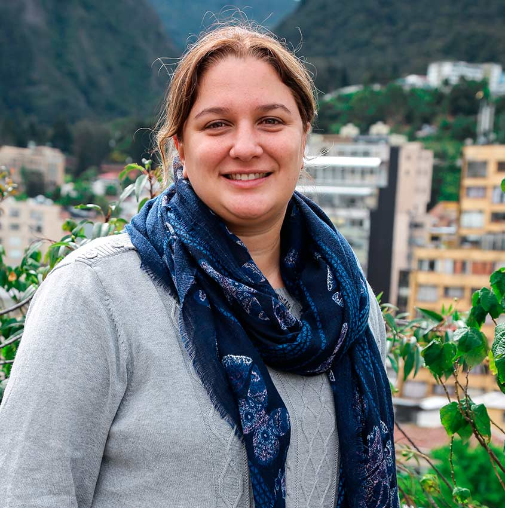

Gavino Puggioni
Gavino Puggioni is an Associate Professor and Head of the Statistics Section in the Department of Computer Science and Statistics at the University of Rhode Island, where he also holds a joint appointment with the College of the Environment and Life Sciences. Born and raised in Italy, he completed his undergraduate and master’s studies in Economics at Bocconi University. He later earned a master’s degree and a Ph.D. in Statistics from Duke University in 2008. After completing his Ph.D., he pursued postdoctoral studies at the University of North Carolina at Chapel Hill and Emory University. His primary research areas include the development and application of Bayesian methods, with a particular focus on the analysis of dependent data such as time series, spatial, and spatio-temporal data, stochastic differential equations, model mixtures, and model averaging.

Valérie Gauthier-Umaña
Valérie Gauthier-Umaña is an Assistant Professor in the Department of Systems and Computing Engineering at the Universidad de los Andes, Colombia. She earned her degree in Mathematics from the same university. She later completed a master's degree in Algebra, Geometry, and Number Theory at the University of Bordeaux I, France, and the Università degli Studi di Padova, Italy. She obtained her Ph.D. in Applied Mathematics, focusing on post-quantum cryptography, at the Technical University of Denmark (DTU). Her research areas include cryptography and coding theory. She has contributed to academic publications, including co-editing the proceedings of the 17th International Conference on Applied Cryptography and Network Security (ACNS 2019) in Bogotá, Colombia. Additionally, she has collaborated on research regarding attacks on cryptographic systems based on Reed-Solomon and McEliece codes.